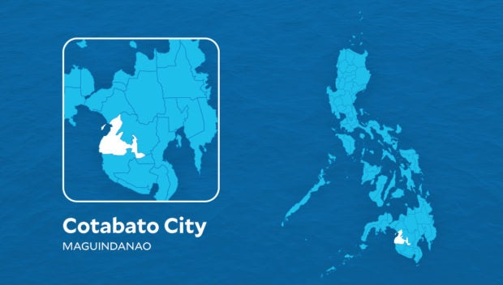
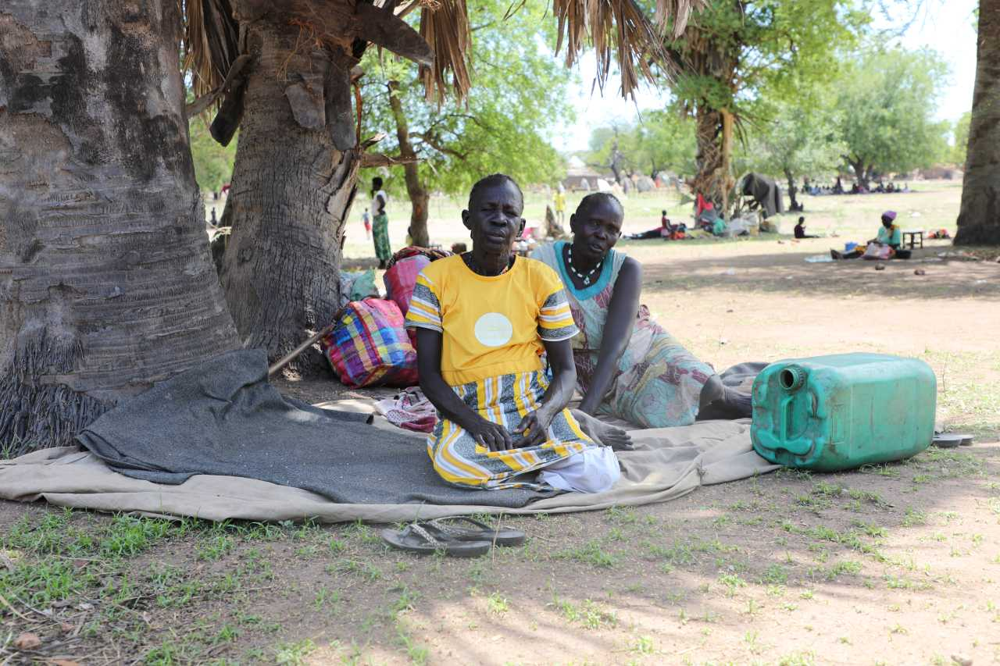

Top News
Yellen says visit helps put US-China ties on 'surer footing'
BEIJING, China — US Treasury Secretary Janet Yellen said Sunday that her talks with top Chinese officials
have helped put ties on "surer footing", as she wrapped up a trip aimed at stabilising fraught relations
between the two biggest economies.
During her four-day trip -- which came on the heels of US Secretary of State Antony Blinken's visit -- Yellen stressed the need for healthy economic competition and improved communication, and urged cooperation on the grave threat posed by climate change.
"And on both sides, the sentiment that was expressed is that the world is big enough for both of our countries to thrive, to cooperate on shared global challenges, to have a meaningful economic relationship and that we needed to stabilise our relationship to make sure that we were able to accomplish that," Yellen said in an interview with CBS
During her four-day trip -- which came on the heels of US Secretary of State Antony Blinken's visit -- Yellen stressed the need for healthy economic competition and improved communication, and urged cooperation on the grave threat posed by climate change.
"And on both sides, the sentiment that was expressed is that the world is big enough for both of our countries to thrive, to cooperate on shared global challenges, to have a meaningful economic relationship and that we needed to stabilise our relationship to make sure that we were able to accomplish that," Yellen said in an interview with CBS
Phivolcs: Mayon Volcano pyroclastic density currents now more frequent
Pyroclastic density currents or PDCs are made up of fragmented volcanic particles, gases, and ash that
travel down volcanic slopes at high speeds
MANILA, Philippines – State volcanologists observed an increase in the frequency of pyroclastic density currents (PDCs) from Mayon Volcano in Albay, which started late Sunday afternoon, July 9.
PDCs are made up of fragmented volcanic particles, gases, and ash that travel down volcanic slopes at high speeds.
The Philippine Institute of Volcanology and Seismology (Phivolcs) said in an advisory at 8 am on Monday, July 10, that there have been 33 PDCs since 5 pm, Sunday.
These PDCs were “generated by dome collapse from Mayon Volcano’s summit crater and the collapsing front and margins of the advancing lava flows on the upper to middle slopes.”
MANILA, Philippines – State volcanologists observed an increase in the frequency of pyroclastic density currents (PDCs) from Mayon Volcano in Albay, which started late Sunday afternoon, July 9.
PDCs are made up of fragmented volcanic particles, gases, and ash that travel down volcanic slopes at high speeds.
The Philippine Institute of Volcanology and Seismology (Phivolcs) said in an advisory at 8 am on Monday, July 10, that there have been 33 PDCs since 5 pm, Sunday.
These PDCs were “generated by dome collapse from Mayon Volcano’s summit crater and the collapsing front and margins of the advancing lava flows on the upper to middle slopes.”

Cotabato City fire victims getting gov’t aid
MANILA, Philippines — The offices of House Speaker Ferdinand Martin G. Romualdez and Tingog Party-list Rep.
Yedda Marie K. Romualdez will facilitate the distribution of relief items to families affected by a fire in
Cotabato City.
Around 200 families were affected by the fire that broke out in Purok Tadman, Poblacion 7, and damaged around 80 houses last July 5.
Following the fire, Tingog Party-list Cotabato brought 250 packed meals and 80 gallons of water to victims who were temporarily sheltered at the Datu Siang Elementary School.
Romualdez said that his office and Tingog Party-list were planning to distribute relief goods under the Department of Social Welfare and Development Assistance to Individuals in Crisis Situations (AICS) to the victims on July 12.
Around 200 families were affected by the fire that broke out in Purok Tadman, Poblacion 7, and damaged around 80 houses last July 5.
Following the fire, Tingog Party-list Cotabato brought 250 packed meals and 80 gallons of water to victims who were temporarily sheltered at the Datu Siang Elementary School.
Romualdez said that his office and Tingog Party-list were planning to distribute relief goods under the Department of Social Welfare and Development Assistance to Individuals in Crisis Situations (AICS) to the victims on July 12.

Today's top news: Sudan, Occupied Palestinian territory, Ukraine
As the fighting continues in Sudan, we are stepping up support for the growing number of people fleeing to
neighbouring countries.
Yesterday, we released US$8 million from the South Sudan Humanitarian Fund to help refugees and returnees from Sudan who are seeking shelter in South Sudan. The funds will help organizations on the ground provide food, water, shelter and medical care to those affected by the ongoing violence. Some 150,000 people have been recorded arriving in South Sudan since the conflict in Sudan erupted on 15 April – and that number is expected to increase as the crisis continues.
This week, the Under-Secretary-General for Humanitarian Affairs, Martin Griffiths, also allocated $5 million from the Central Emergency Response Fund (CERF) to support new arrivals in Ethiopia. That money will help met the needs of about 100,000 people for six months. Humanitarian partners are providing water, health, protection assistance, and other essential services. More than 60,000 people have crossed into Ethiopia since the onset of the crisis in Sudan.
Yesterday, we released US$8 million from the South Sudan Humanitarian Fund to help refugees and returnees from Sudan who are seeking shelter in South Sudan. The funds will help organizations on the ground provide food, water, shelter and medical care to those affected by the ongoing violence. Some 150,000 people have been recorded arriving in South Sudan since the conflict in Sudan erupted on 15 April – and that number is expected to increase as the crisis continues.
This week, the Under-Secretary-General for Humanitarian Affairs, Martin Griffiths, also allocated $5 million from the Central Emergency Response Fund (CERF) to support new arrivals in Ethiopia. That money will help met the needs of about 100,000 people for six months. Humanitarian partners are providing water, health, protection assistance, and other essential services. More than 60,000 people have crossed into Ethiopia since the onset of the crisis in Sudan.
Sarah Silverman sues Meta, OpenAI for copyright infringement
Comedian Sarah Silverman and two authors have filed copyright infringement lawsuits against Meta Platforms
and OpenAI for allegedly using their content without permission to train artificial intelligence language
models.
The proposed class action lawsuits filed by Silverman, Richard Kadrey and Christopher Golden in San Francisco federal court Friday allege Facebook parent company Meta and ChatGPT maker OpenAI used copyrighted material to train chat bots.
Meta and OpenAI, a private company backed by Microsoft Corp, did not immediately respond to requests for comment on Sunday.
The lawsuits underscore the legal risks developers of chat bots face when using troves of copyrighted material to create apps that deliver realistic responses to user prompts.
The proposed class action lawsuits filed by Silverman, Richard Kadrey and Christopher Golden in San Francisco federal court Friday allege Facebook parent company Meta and ChatGPT maker OpenAI used copyrighted material to train chat bots.
Meta and OpenAI, a private company backed by Microsoft Corp, did not immediately respond to requests for comment on Sunday.
The lawsuits underscore the legal risks developers of chat bots face when using troves of copyrighted material to create apps that deliver realistic responses to user prompts.
Meralco hints at rate cut in July
Power distributor Manila Electric Co (Meralco) on Tuesday said there is a large possibility that power rates
may be adjusted downward as oil prices go down.
Meralco spokesman Joe Zaldarriaga noted stabilization of consumption patterns could also lead to a rate adjustment.
"Tapos na yung summer months, nasa tag-ulan na tayo so nagiging stable na ang kuryente," he told TeleRadyo Serbisyo, adding that he will make an announcement next month.
Power rates in June went up by P0.4183 per kWh after the completion of the distribution-related refund. In a statement, the utility distributor said there would be an upward adjustment of P0.4183 per kWh in the electricity rate this month, bringing the overall rate for a typical household to P11.9112 per kWh from May's P11.4929 per kWh.
Meralco spokesman Joe Zaldarriaga noted stabilization of consumption patterns could also lead to a rate adjustment.
"Tapos na yung summer months, nasa tag-ulan na tayo so nagiging stable na ang kuryente," he told TeleRadyo Serbisyo, adding that he will make an announcement next month.
Power rates in June went up by P0.4183 per kWh after the completion of the distribution-related refund. In a statement, the utility distributor said there would be an upward adjustment of P0.4183 per kWh in the electricity rate this month, bringing the overall rate for a typical household to P11.9112 per kWh from May's P11.4929 per kWh.